using CalculusWithJulia
using Plots
using SymPy
using Roots
using QuadGK52 Polar Coordinates and Curves
This section uses these add-on packages:
The description of the \(x\)-\(y\) plane via Cartesian coordinates is not the only possible way, though one that is most familiar. Here we discuss a different means. Instead of talking about over and up from an origin, we focus on a direction and a distance from the origin.
52.1 Definition of polar coordinates
Polar coordinates parameterize the plane though an angle \(\theta\) made from the positive ray of the \(x\) axis and a radius \(r\).
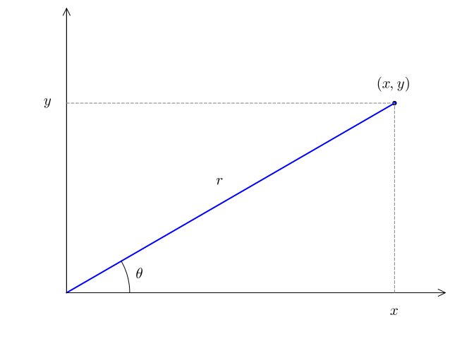
To recover the Cartesian coordinates from the pair \((r,\theta)\), we have these formulas from right triangle geometry:
\[ x = r \cos(\theta),~ y = r \sin(\theta). \]
Each point \((x,y)\) corresponds to several possible values of \((r,\theta)\), as any integer multiple of \(2\pi\) added to \(\theta\) will describe the same point. Except for the origin, there is only one pair when we restrict to \(r > 0\) and \(0 \leq \theta < 2\pi\).
For values in the first and fourth quadrants (the range of \(\tan^{-1}(x)\)), we have:
\[ r = \sqrt{x^2 + y^2},~ \theta=\tan^{-1}(y/x). \]
For the other two quadrants, the signs of \(y\) and \(x\) must be considered. This is done with the function atan when two arguments are used.
For example, \((-3, 4)\) would have polar coordinates:
x,y = -3, 4
rad, theta = sqrt(x^2 + y^2), atan(y, x)(5.0, 2.214297435588181)And reversing
rad*cos(theta), rad*sin(theta)(-2.999999999999999, 4.000000000000001)This figure illustrates:
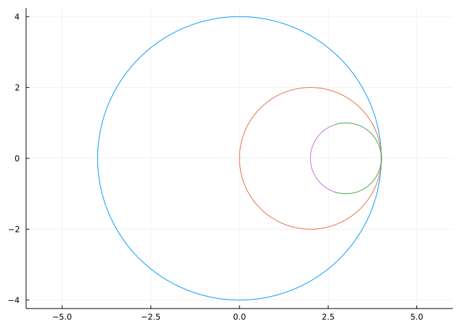
The case where \(r < 0\) is handled by going \(180\) degrees in the opposite direction, in other words the point \((r, \theta)\) can be described as well by \((-r,\theta+\pi)\).
52.2 Parameterizing curves using polar coordinates
If \(r=r(\theta)\), then the parameterized curve \((r(\theta), \theta)\) is just the set of points generated as \(\theta\) ranges over some set of values. There are many examples of parameterized curves that simplify what might be a complicated presentation in Cartesian coordinates.
For example, a circle has the form \(x^2 + y^2 = R^2\). Whereas parameterized by polar coordinates it is just \(r(\theta) = R\), or a constant function.
The circle centered at \((r_0, \gamma)\) (in polar coordinates) with radius \(R\) has a more involved description in polar coordinates:
\[ r(\theta) = r_0 \cos(\theta - \gamma) + \sqrt{R^2 - r_0^2\sin^2(\theta - \gamma)}. \]
The case where \(r_0 > R\) will not be defined for all values of \(\theta\), only when \(|\sin(\theta-\gamma)| \leq R/r_0\).
Examples
The Plots.jl package provides a means to visualize polar plots through plot(thetas, rs, proj=:polar). For example, to plot a circe with \(r_0=1/2\) and \(\gamma=\pi/6\) we would have:
R, r0, gamma = 1, 1/2, pi/6
r(theta) = r0 * cos(theta-gamma) + sqrt(R^2 - r0^2*sin(theta-gamma)^2)
ts = range(0, 2pi, length=100)
rs = r.(ts)
plot(ts, rs, proj=:polar, legend=false)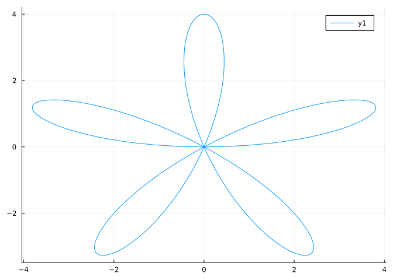
To avoid having to create values for \(\theta\) and values for \(r\), the CalculusWithJulia package provides a helper function, plot_polar. To distinguish it from other functions provided by Plots, the calling pattern is different. It specifies an interval to plot over by a..b and puts that first (this notation for closed intervals is from IntervalSets), followed by r. Other keyword arguments are passed onto a plot call.
We will use this in the following, as the graphs are a bit more familiar and the calling pattern similar to how we have plotted functions.
As Plots will make a parametric plot when called as plot(function, function, a,b), the above function creates two such functions using the relationship \(x=r\cos(\theta)\) and \(y=r\sin(\theta)\).
Using plot_polar, we can plot circles with the following. We have to be a bit careful for the general circle, as when the center is farther away from the origin that the radius (\(R\)), then not all angles will be acceptable and there are two functions needed to describe the radius, as this comes from a quadratic equation and both the “plus” and “minus” terms are used.
R=4; r(t) = R;
function plot_general_circle!(r0, gamma, R)
# law of cosines has if gamma=0, |theta| <= asin(R/r0)
# R^2 = a^2 + r^2 - 2a*r*cos(theta); solve for a
r(t) = r0 * cos(t - gamma) + sqrt(R^2 - r0^2*sin(t-gamma)^2)
l(t) = r0 * cos(t - gamma) - sqrt(R^2 - r0^2*sin(t-gamma)^2)
if R < r0
theta = asin(R/r0)-1e-6 # avoid round off issues
plot_polar!((gamma-theta)..(gamma+theta), r)
plot_polar!((gamma-theta)..(gamma+theta), l)
else
plot_polar!(0..2pi, r)
end
end
plot_polar(0..2pi, r, aspect_ratio=:equal, legend=false)
plot_general_circle!(2, 0, 2)
plot_general_circle!(3, 0, 1)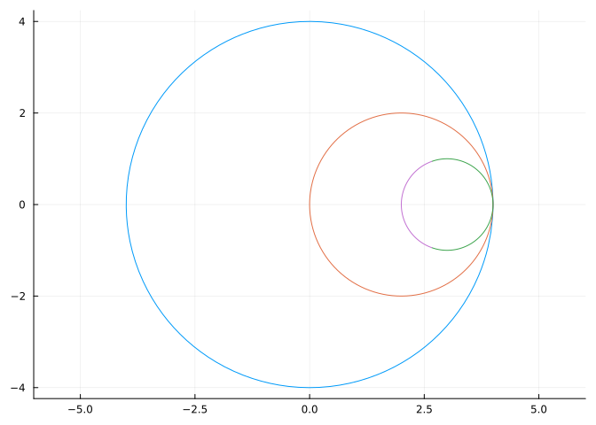
There are many interesting examples of curves described by polar coordinates. An interesting compilation of famous curves is found at the MacTutor History of Mathematics archive, many of which have formulas in polar coordinates.
Example
The rhodenea curve has
\[ r(\theta) = a \sin(k\theta) \]
a, k = 4, 5
r(theta) = a * sin(k * theta)
plot_polar(0..pi, r)
This graph has radius \(0\) whenever \(\sin(k\theta) = 0\) or \(k\theta =n\pi\). Solving means that it is \(0\) at integer multiples of \(\pi/k\). In the above, with \(k=5\), there will \(5\) zeroes in \([0,\pi]\). The entire curve is traced out over this interval, the values from \(\pi\) to \(2\pi\) yield negative value of \(r\), so are related to values within \(0\) to \(\pi\) via the relation \((r,\pi +\theta) = (-r, \theta)\).
Example
The folium is a somewhat similar looking curve, but has this description:
\[ r(\theta) = -b \cos(\theta) + 4a \cos(\theta) \sin(2\theta) \]
𝒂, 𝒃 = 4, 2
𝒓(theta) = -𝒃 * cos(theta) + 4𝒂 * cos(theta) * sin(2theta)
plot_polar(0..2pi, 𝒓)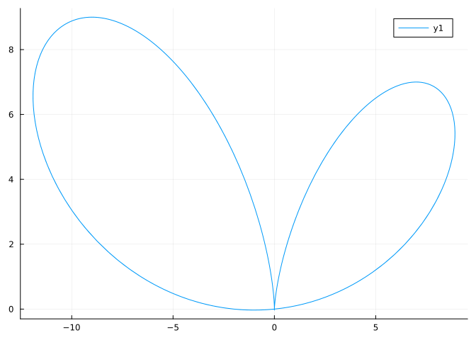
The folium has radial part \(0\) when \(\cos(\theta) = 0\) or \(\sin(2\theta) = b/4a\). This could be used to find out what values correspond to which loop. For our choice of \(a\) and \(b\) this gives \(\pi/2\), \(3\pi/2\) or, as \(b/4a = 1/8\), when \(\sin(2\theta) = 1/8\) which happens at \(a_0=\sin^{-1}(1/8)/2=0.0626...\) and \(\pi/2 - a_0\), \(\pi+a_0\) and \(3\pi/2 - a_0\). The first folium can be plotted with:
𝒂0 = (1/2) * asin(1/8)
plot_polar(𝒂0..(pi/2-𝒂0), 𝒓)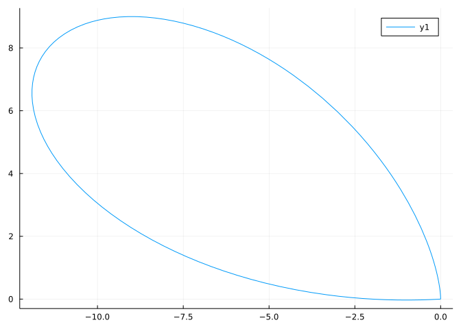
The second - which is too small to appear in the initial plot without zooming in - with
plot_polar((pi/2 - 𝒂0)..(pi/2), 𝒓)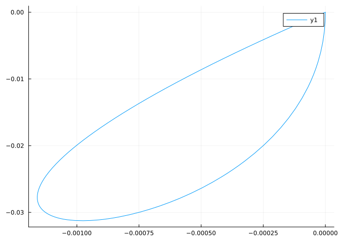
The third with
plot_polar((pi/2)..(pi + 𝒂0), 𝒓)The plot repeats from there, so the initial plot could have been made over \([0, \pi + a_0]\).
Example
The Limacon of Pascal has
\[ r(\theta) = b + 2a\cos(\theta) \]
a,b = 4, 2
r(theta) = b + 2a*cos(theta)
plot_polar(0..2pi, r)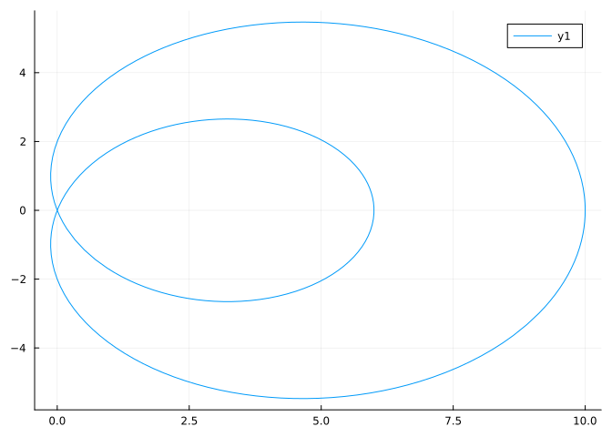
Example
Some curves require a longer parameterization, such as this where we plot over \([0, 8\pi]\) so that the cosine term can range over an entire half period:
r(theta) = sqrt(abs(cos(theta/8)))
plot_polar(0..8pi, r)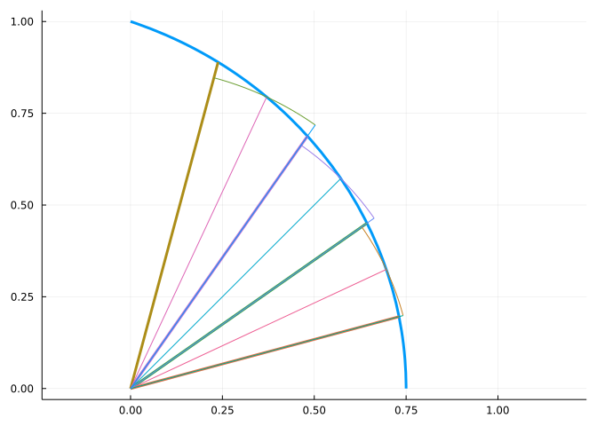
52.3 Area of polar graphs
Consider the cardioid described by \(r(\theta) = 2(1 + \cos(\theta))\):
r(theta) = 2(1 + cos(theta))
plot_polar(0..2pi, r)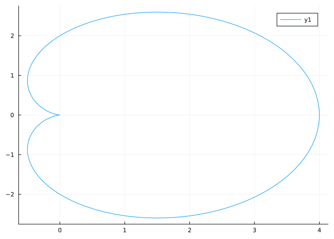
How much area is contained in the graph?
In some cases it might be possible to translate back into Cartesian coordinates and compute from there. In practice, this is not usually the best solution.
The area can be approximated by wedges (not rectangles). For example, here we see that the area over a given angle is well approximated by the wedge for each of the sectors:
As well, see this part of a Wikipedia page for a figure.
Imagine we have \(a < b\) and a partition \(a=t_0 < t_1 < \cdots < t_n = b\). Let \(\phi_i = (1/2)(t_{i-1} + t_{i})\) be the midpoint. Then the wedge of radius \(r(\phi_i)\) with angle between \(t_{i-1}\) and \(t_i\) will have area \(\pi r(\phi_i)^2 (t_i-t_{i-1}) / (2\pi) = (1/2) r(\phi_i)^2(t_i-t_{i-1})\), the ratio \((t_i-t_{i-1}) / (2\pi)\) being the angle to the total angle of a circle. Summing the area of these wedges over the partition gives a Riemann sum approximation for the integral \((1/2)\int_a^b r(\theta)^2 d\theta\). This limit of this sum defines the area in polar coordinates.
Area of polar regions. Let \(R\) denote the region bounded by the curve \(r(\theta)\) and bounded by the rays \(\theta=a\) and \(\theta=b\) with \(b-a \leq 2\pi\), then the area of \(R\) is given by:
\(A = \frac{1}{2}\int_a^b r(\theta)^2 d\theta.\)
So the area of the cardioid, which is parameterized over \([0, 2\pi]\) is found by
r(theta) = 2(1 + cos(theta))
@syms theta
(1//2) * integrate(r(theta)^2, (theta, 0, 2PI))
\[
6 \pi
\]
Example
The folium has general formula \(r(\theta) = -b \cos(\theta) +4a\cos(\theta)\sin(\theta)^2\). When \(a=1\) and \(b=1\) a leaf of the folium is traced out between \(\pi/6\) and \(\pi/2\). What is the area of that leaf?
An antiderivative exists for arbitrary \(a\) and \(b\):
@syms 𝐚 𝐛 𝐭heta
𝐫(theta) = -𝐛*cos(theta) + 4𝐚*cos(theta)*sin(theta)^2
integrate(𝐫(𝐭heta)^2, 𝐭heta) / 2
\[
\frac{𝐚^{2} 𝐭heta \sin^{6}{\left(𝐭heta \right)}}{2} + \frac{3 𝐚^{2} 𝐭heta \sin^{4}{\left(𝐭heta \right)} \cos^{2}{\left(𝐭heta \right)}}{2} + \frac{3 𝐚^{2} 𝐭heta \sin^{2}{\left(𝐭heta \right)} \cos^{4}{\left(𝐭heta \right)}}{2} + \frac{𝐚^{2} 𝐭heta \cos^{6}{\left(𝐭heta \right)}}{2} + \frac{𝐚^{2} \sin^{5}{\left(𝐭heta \right)} \cos{\left(𝐭heta \right)}}{2} - \frac{4 𝐚^{2} \sin^{3}{\left(𝐭heta \right)} \cos^{3}{\left(𝐭heta \right)}}{3} - \frac{𝐚^{2} \sin{\left(𝐭heta \right)} \cos^{5}{\left(𝐭heta \right)}}{2} - \frac{𝐚 𝐛 𝐭heta \sin^{4}{\left(𝐭heta \right)}}{2} - 𝐚 𝐛 𝐭heta \sin^{2}{\left(𝐭heta \right)} \cos^{2}{\left(𝐭heta \right)} - \frac{𝐚 𝐛 𝐭heta \cos^{4}{\left(𝐭heta \right)}}{2} - \frac{𝐚 𝐛 \sin^{3}{\left(𝐭heta \right)} \cos{\left(𝐭heta \right)}}{2} + \frac{𝐚 𝐛 \sin{\left(𝐭heta \right)} \cos^{3}{\left(𝐭heta \right)}}{2} + \frac{𝐛^{2} 𝐭heta \sin^{2}{\left(𝐭heta \right)}}{4} + \frac{𝐛^{2} 𝐭heta \cos^{2}{\left(𝐭heta \right)}}{4} + \frac{𝐛^{2} \sin{\left(𝐭heta \right)} \cos{\left(𝐭heta \right)}}{4}
\]
For our specific values, the answer can be computed with:
ex = integrate(𝐫(𝐭heta)^2, (𝐭heta, PI/6, PI/2)) / 2
ex(𝐚 => 1, 𝐛=>1)
\[
\frac{\pi}{12}
\]
Example
Pascal’s limacon is like the cardioid, but contains an extra loop. When \(a=1\) and \(b=1\) we have this graph.
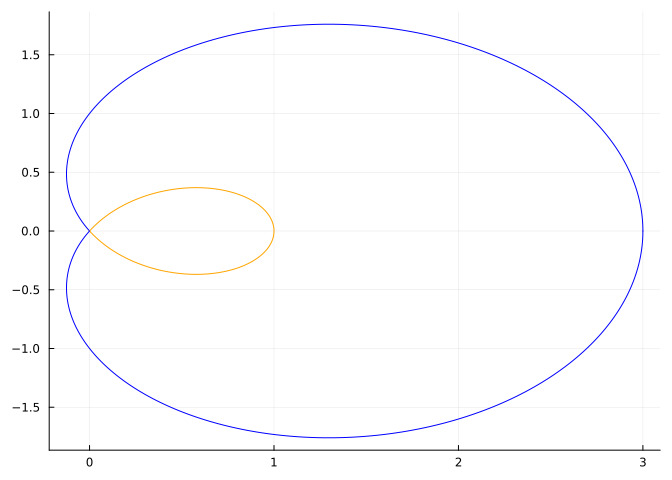
What is the area contained in the outer loop, that is not in the inner loop?
To answer, we need to find out what range of values in \([0, 2\pi]\) the inner and outer loops are traced. This will be when \(r(\theta) = 0\), which for the choice of \(a\) and \(b\) solves \(1 + 2\cos(\theta) = 0\), or \(\cos(\theta) = -1/2\). This is \(\pi/2 + \pi/6\) and \(3\pi/2 - \pi/6\). The inner loop is traversed between those values and has area:
@syms 𝖺 𝖻 𝗍heta
𝗋(theta) = 𝖻 + 2𝖺*cos(𝗍heta)
𝖾x = integrate(𝗋(𝗍heta)^2 / 2, (𝗍heta, PI/2 + PI/6, 3PI/2 - PI/6))
𝗂nner = 𝖾x(𝖺=>1, 𝖻=>1)
\[
\pi - \frac{3 \sqrt{3}}{2}
\]
The outer area (including the inner loop) is the integral from \(0\) to \(\pi/2 + \pi/6\) plus that from \(3\pi/2 - \pi/6\) to \(2\pi\). These areas are equal, so we double the first:
𝖾x1 = 2 * integrate(𝗋(𝗍heta)^2 / 2, (𝗍heta, 0, PI/2 + PI/6))
𝗈uter = 𝖾x1(𝖺=>1, 𝖻=>1)
\[
\frac{3 \sqrt{3}}{2} + 2 \pi
\]
The answer is the difference:
𝗈uter - 𝗂nner
\[
\pi + 3 \sqrt{3}
\]
52.4 Arc length
The length of the arc traced by a polar graph can also be expressed using an integral. Again, we partition the interval \([a,b]\) and consider the wedge from \((r(t_{i-1}), t_{i-1})\) to \((r(t_i), t_i)\). The curve this wedge approximates will have its arc length approximated by the line segment connecting the points. Expressing the points in Cartesian coordinates and simplifying gives the distance squared as:
\[\begin{align*} d_i^2 &= (r(t_i) \cos(t_i) - r(t_{i-1})\cos(t_{i-1}))^2 + (r(t_i) \sin(t_i) - r(t_{i-1})\sin(t_{i-1}))^2\\ &= r(t_i)^2 - 2r(t_i)r(t_{i-1}) \cos(t_i - t_{i-1}) + r(t_{i-1})^2 \\ &\approx r(t_i)^2 - 2r(t_i)r(t_{i-1}) (1 - \frac{(t_i - t_{i-1})^2}{2})+ r(t_{i-1})^2 \quad(\text{as} \cos(x) \approx 1 - x^2/2)\\ &= (r(t_i) - r(t_{i-1}))^2 + r(t_i)r(t_{i-1}) (t_i - t_{i-1})^2. \end{align*}\]
As was done with arc length we multiply \(d_i\) by \((t_i - t_{i-1})/(t_i - t_{i-1})\) and move the bottom factor under the square root:
\[\begin{align*} d_i &= d_i \frac{t_i - t_{i-1}}{t_i - t_{i-1}} \\ &\approx \sqrt{\frac{(r(t_i) - r(t_{i-1}))^2}{(t_i - t_{i-1})^2} + \frac{r(t_i)r(t_{i-1}) (t_i - t_{i-1})^2}{(t_i - t_{i-1})^2}} \cdot (t_i - t_{i-1})\\ &= \sqrt{(r'(\xi_i))^2 + r(t_i)r(t_{i-1})} \cdot (t_i - t_{i-1}).\quad(\text{the mean value theorem}) \end{align*}\]
Adding the approximations to the \(d_i\) looks like a Riemann sum approximation to the integral \(\int_a^b \sqrt{(r'(\theta)^2) + r(\theta)^2} d\theta\) (with the extension to the Riemann sum formula needed to derive the arc length for a parameterized curve). That is:
Arc length of a polar curve. The arc length of the curve described in polar coordinates by \(r(\theta)\) for \(a \leq \theta \leq b\) is given by:
\(\int_a^b \sqrt{r'(\theta)^2 + r(\theta)^2} d\theta.\)
We test this out on a circle with \(r(\theta) = R\), a constant. The integrand simplifies to just \(\sqrt{R^2}\) and the integral is from \(0\) to \(2\pi\), so the arc length is \(2\pi R\), precisely the formula for the circumference.
Example
A cardioid is described by \(r(\theta) = 2(1 + \cos(\theta))\). What is the arc length from \(0\) to \(2\pi\)?
The integrand is integrable with antiderivative \(4\sqrt{2\cos(\theta) + 2} \cdot \tan(\theta/2)\), but SymPy isn’t able to find the integral. Instead we give a numeric answer:
r(theta) = 2*(1 + cos(theta))
quadgk(t -> sqrt(r'(t)^2 + r(t)^2), 0, 2pi)[1]16.0Example
The equiangular spiral has polar representation
\[ r(\theta) = a e^{\theta \cot(b)} \]
With \(a=1\) and \(b=\pi/4\), find the arc length traced out from \(\theta=0\) to \(\theta=1\).
a, b = 1, PI/4
@syms θ
r(theta) = a * exp(theta * cot(b))
ds = sqrt(diff(r(θ), θ)^2 + r(θ)^2)
integrate(ds, (θ, 0, 1))
\[
- \sqrt{2} + \sqrt{2} e
\]
Example
An Archimedean spiral is defined in polar form by
\[ r(\theta) = a + b \theta \]
That is, the radius increases linearly. The crossings of the positive \(x\) axis occur at \(a + b n 2\pi\), so are evenly spaced out by \(2\pi b\). These could be a model for such things as coils of materials of uniform thickness.
For example, a roll of toilet paper promises \(1000\) sheets with the smaller \(4.1 \times 3.7\) inch size. This \(3700\) inch long connected sheet of paper is wrapped around a paper tube in an Archimedean spiral with \(r(\theta) = d_{\text{inner}}/2 + b\theta\). The entire roll must fit in a standard dimension, so the outer diameter will be \(d_{\text{outer}} = 5~1/4\) inches. Can we figure out \(b\)?
Let \(n\) be the number of windings and assume the starting and ending point is on the positive \(x\) axis, \(r(2\pi n) = d_{\text{outer}}/2 = d_{\text{inner}}/2 + b (2\pi n)\). Solving for \(n\) in terms of \(b\) we get: \(n = ( d_{\text{outer}} - d_{\text{inner}})/2 / (2\pi b)\). With this, the following must hold as the total arc length is \(3700\) inches.
\[ \int_0^{n\cdot 2\pi} \sqrt{r(\theta)^2 + r'(\theta)^2} d\theta = 3700 \]
Numerically then we have:
dinner = 1 + 5/8
douter = 5 + 1/4
r(b,t) = dinner/2 + b*t
rp(b,t) = b
integrand(b,t) = sqrt((r(b,t))^2 + rp(b,t)^2) # sqrt(r^2 + r'^2)
n(b) = (douter - dinner)/2/(2*pi*b)
b = find_zero(b -> quadgk(t->integrand(b,t), 0, n(b)*2*pi)[1] - 3700, (1/100000, 1/100))
b, b*25.4(0.0008419553488281331, 0.02138566586023458)The value b gives a value in inches, the latter in millimeters.
52.5 Questions
Question
Let \(r=3\) and \(\theta=\pi/8\). In Cartesian coordinates what is \(x\)?
What is \(y\)?
Question
A point in Cartesian coordinates is given by \((-12, -5)\). In has a polar coordinate representation with an angle \(\theta\) in \([0,2\pi]\) and \(r > 0\). What is \(r\)?
What is \(\theta\)?
Question
Does \(r(\theta) = a \sec(\theta - \gamma)\) describe a line for \(0\) when \(a=3\) and \(\gamma=\pi/4\)?
If yes, what is the \(y\) intercept
What is slope of the line?
Does this seem likely: the slope is \(-1/\tan(\gamma)\)?
Question
The polar curve \(r(\theta) = 2\cos(\theta)\) has tangent lines at most points. This differential representation of the chain rule
\[ \frac{dy}{dx} = \frac{dy}{d\theta} / \frac{dx}{d\theta}, \]
allows the slope to be computed when \(y\) and \(x\) are the Cartesian form of the polar curve. For this curve, we have
\[ \frac{dy}{d\theta} = \frac{d}{d\theta}(2\sin(\theta) \cdot \cos(\theta)),~ \text{ and } \frac{dx}{d\theta} = \frac{d}{d\theta}(2\cos(\theta) \cdot \cos(\theta)). \]
Numerically, what is the slope of the tangent line when \(\theta = \pi/4\)?
Question
For different values \(k > 0\) and \(e > 0\) the polar equation
\[ r(\theta) = \frac{ke}{1 + e\cos(\theta)} \]
has a familiar form. The value of \(k\) is just a scale factor, but different values of \(e\) yield different shapes.
When \(0 < e < 1\) what is the shape of the curve? (Answer by making a plot and guessing.)
When \(e = 1\) what is the shape of the curve?
When \(1 < e\) what is the shape of the curve?
Question
Find the area of a lobe of the lemniscate curve traced out by \(r(\theta) = \sqrt{\cos(2\theta)}\) between \(-\pi/4\) and \(\pi/4\). What is the answer?
Question
Find the area of a lobe of the eight curve traced out by \(r(\theta) = \sqrt{\cos(2\theta)\sec(\theta)^4}\) from \(-\pi/4\) to \(\pi/4\). Do this numerically.
Question
Find the arc length of a lobe of the lemniscate curve traced out by \(r(\theta) = \sqrt{\cos(2\theta)}\) between \(-\pi/4\) and \(\pi/4\). What is the answer (numerically)?
Question
Find the arc length of a lobe of the eight curve traced out by \(r(\theta) = \sqrt{\cos(2\theta)\sec(\theta)^4}\) from \(-\pi/4\) to \(\pi/4\). Do this numerically.